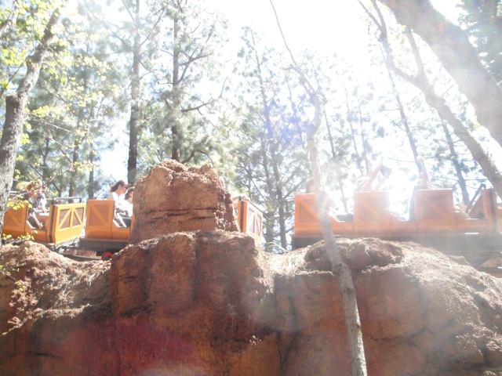
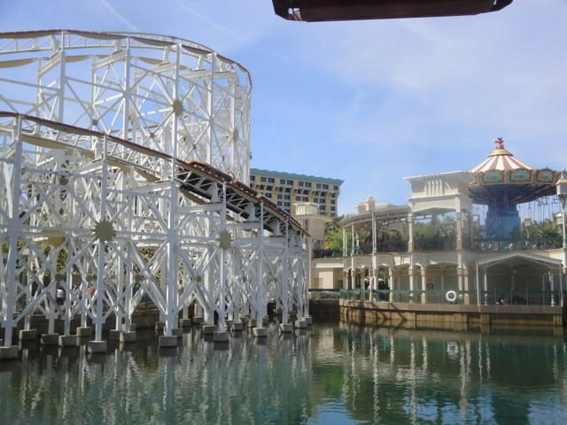
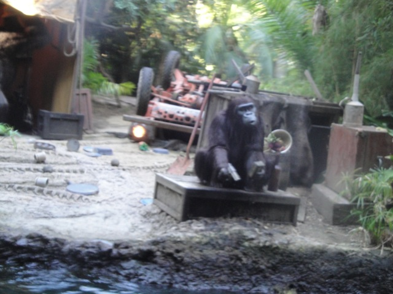
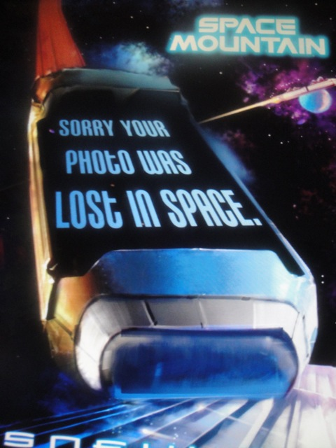

Spring DLR 2012
All right. Over Spring Break, I mostly just worked @ Six Flags Magic Mountain, but I did also manage to squeeze in a trip to the Disneyland Resort as well. And here to welcome our arrival is none other than the Mad Hatter himself.
Such sad news on this trip to Disneyland. The Blue Ribbon Bakery is closed. ='(
Um. Yeah. It's crowded today. REALLY FREAKING CROWDED TODAY!!!!

All right. Time for our first ride of the day. Big Thunder Mountain. =)
 Good Idea Thunder Mtn Goat. If we blow up half of the people in the park, it won't be nearly as crowded.
Good Idea Thunder Mtn Goat. If we blow up half of the people in the park, it won't be nearly as crowded.
 While Thunder Mountain wasn't quite running its best today, but hey. It was still fun, like it always is.
While Thunder Mountain wasn't quite running its best today, but hey. It was still fun, like it always is.
 Hey people on the Monorail. Hows it going!!!? =)
Hey people on the Monorail. Hows it going!!!? =)
Hmm. Perhaps it'll be less crowded over at California Adventure.
HOLY CRAP!!!! That is the FASTPASS line for Grizzly. THE FASTPASS LINE!!!! Yeah, its really freaking crowded today.
Yeah. I think a ride on the Mickey Wheel is definetly in order.
Oh come on. You guys call that freaking out? You guys really need to learn from the professionals.
I'll be back for you this summer Carsland.
 All right. Its time for some fun on California Screamin.
All right. Its time for some fun on California Screamin.
 All this time, we've been f*cking idiots. It turns out that California Screamin has been a water coaster all this time.
All this time, we've been f*cking idiots. It turns out that California Screamin has been a water coaster all this time.
 Yeah. California Screamin was running really well today.
Yeah. California Screamin was running really well today.

California Screamin from the Mickey Wheel.
 All right. We're gonna head on out to Adventureland.
All right. We're gonna head on out to Adventureland.
Hello Baby Ducks. Hows it going?
We got some Dole Floats. They were good, but certainly not worth the HUGE wait.
Hey Celeste. Your trip to Africa may have been postponed, but here's the next best thing. A trip on the Jungle Cruise.

When you see a monkey with a gun, stab it with a knife.
Since this is supposed to make up for our medical mission in Sierra Leone, when can we start operating on the animals?
Today, we did not have an ordinary ride on Indiana Jones, for today...
YEP!!!! INDIANA JONES BROKE DOWN!!!!!! =)
While I didn't get an evacuation like I did when I got stuck in the Cold Chamber on Test Track, I briefly got to ride the ride with the lights on and without any music, as demonstrated in this Partial POV.
 Oh yeah, Matterhorn is closed because they're giving it some kind of makeover. Hopefully it'll be better when they reopen it.
Oh yeah, Matterhorn is closed because they're giving it some kind of makeover. Hopefully it'll be better when they reopen it.
"Why are you staring? This is a very normal Saturday Night Activity for us."
One of the 101 Dalmations isn't buying your excuse guys. Try again.
Bullsh*t. Nobody laughs that hard at our stupid jokes.
Celeste!!! What have I told you about breaking into random peoples homes!!!
 For our final ride of the night, we decided to take a spin on Space Mountain.
For our final ride of the night, we decided to take a spin on Space Mountain.

Sad day. Our photo was lost in space. Hope you enjoyed this update.
Home